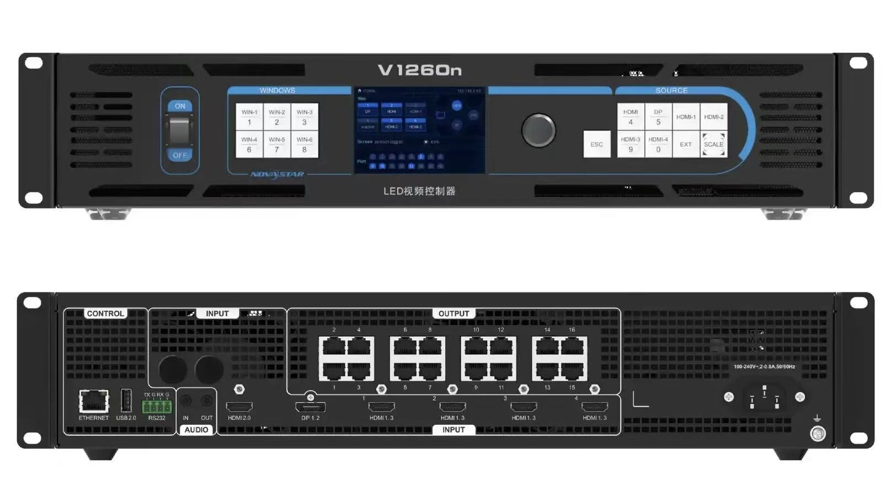

By David
Fine pixel pitch is the part of LED specification where the numbers stop being abstract. Below roughly P1.9, pitch decides how close a viewer can stand before the image breaks into structure, how much resolution fits into a room of a given size, and — because yield falls as pitch shrinks — a large part of what the wall will cost.
This guide covers the three numbers that actually drive a fine pitch decision: pitch, viewing distance and room size. It then works through resolution and content, brightness, calibration, cooling and service, the cost structure, and the specification questions worth settling before an order.
There is no single industry threshold, but in practice fine pitch starts where a normal viewer can no longer see the individual LED structure at the distance the screen is actually watched from. For an indoor wall read at two or three metres, that lands somewhere below P1.9 and frequently below P1.5. The band this guide covers — P0.9 to P1.9 — is the range that most boardrooms, control rooms, studios, lobbies and high-end retail walls are specified in.
Pitch alone does not describe the screen. Two panels at the same pitch can differ markedly in contrast, surface treatment, calibration quality and how steadily they hold their look across a batch. That is why the fuller comparison of the two dominant packaging routes sits in our COB vs SMD vs GOB encapsulation guide — at fine pitch it is often the packaging, not the pitch figure, that decides how the wall reads.
The classic rule of thumb relates minimum comfortable viewing distance to pixel pitch, roughly as pitch multiplied by a factor per millimetre. The useful version for planning is simpler: work out the closest seat or the nearest desk in the room, then choose the pitch that still resolves cleanly at that distance. Choosing from the far end of the room is the most common specification error, because the people who judge the screen are usually sitting closest to it.
| Pitch | Closest viewing distance (approx.) | Typical room it suits |
|---|---|---|
| P0.9 | From around 1 m | Executive boardrooms, grading and control desks |
| P1.25 | From around 1.5 m | Conference rooms, studios, close-read control walls |
| P1.56 | From around 2 m | Meeting rooms, lobbies, retail feature walls |
| P1.9 | From around 2.5 m | Larger meeting rooms, atria, auditoria |
| Coarser than P1.9 | Beyond 3 m | Where viewing distance is long and budget is tighter |
Distances are planning guides, not hard limits — content matters as much as geometry. A wall showing large-format video tolerates a coarser pitch at a given distance than the same wall showing dense text, spreadsheets or CAD. Our viewing distance guide covers the content side of that trade-off in more depth.
In practice the choice is less about the finest pitch available than about the finest pitch the room justifies. Going one step finer than the seating distance requires buys resolution the audience cannot resolve, at a meaningful cost premium. Staying one step coarser is often the better engineering decision — provided the content is not text-dense.
| Room | Pitch that usually fits | Why |
|---|---|---|
| Executive boardroom | P0.9 – P1.25 | Short viewing distance, text and video content |
| Control room / operations centre | P0.9 – P1.25 | Operators sit close, read detail for hours |
| Broadcast or virtual studio | P1.25 – P1.56 | Camera distance sets the floor; refresh matters too |
| Conference and meeting rooms | P1.25 – P1.56 | Mixed seating, moderate distance |
| Lobby or reception wall | P1.56 – P1.9 | Longer viewing distance, image-led content |
| Retail or showroom feature | P1.25 – P1.9 | Depends on how close shoppers can approach |
Resolution is a consequence of pitch and wall size, not an independent choice. A wall at P1.25 that measures 4.8 m by 2.7 m resolves to roughly 3840 by 2160 — native 4K — while the same wall at P1.9 lands nearer 2560 by 1440. Deciding whether the wall needs to map one-to-one onto a standard signal format is therefore a question about how large the wall will be, which is itself usually fixed by the room.
Content fit also covers aspect ratio. Native 16:9 panels make a straightforward match to broadcast and presentation sources, while unusual wall shapes need cabinet combinations that still land on a clean aspect ratio. If a project needs an odd size, the practical constraints are set out in our cabinet size guide.
Fine pitch indoor walls typically run around 600 to 1200 nits, which is ample for controlled lighting and is not the specification that decides quality. Over-specifying brightness in a dim room is a common mistake: it costs power and heat for headroom nobody uses, and it makes low-grey content harder to render cleanly. Match brightness to the room's actual lighting, not to a number from an outdoor datasheet.
At fine pitch the eye is close enough to notice things a coarse outdoor screen hides: a slightly brighter module, a colour cast between adjacent cabinets, a faint seam where batches meet. Those are not pitch problems, they are calibration and batch-matching problems, and they are the single most common reason a technically correct wall still looks uneven.
The practical defences are consistent process and documented settings: panels built on one line, aged before dispatch, measured across the batch, and shipped with the factory calibration recorded so the integrator can bring the wall to a uniform image on site. Pixel-level correction applied per light point is what makes the surface read as continuous rather than as a grid of parts.
Fine pitch panels pack more emitters into the same area, so heat density rises and the thermal path matters more than it does at coarse pitch. Cabinet material, airflow and driver choice all feed into that. Service access is the other half: a wall with front or rear module access can be repaired in place, while a wall that requires panels to come out of the structure turns a single failed module into a scheduling problem.
Cost rises steeply as pitch shrinks, because yield falls and the manufacturing tolerance tightens. The pitch is not the only driver, though — two walls at the same pitch can sit some distance apart in price depending on the packaging method, the calibration standard, the cabinet and the service design. A cheaper wall at the same pitch usually trades away something that shows up later: uniformity, serviceability or how steady the batch-to-batch match is.
| Cost driver | What it affects | Where buyers get caught |
|---|---|---|
| Pixel pitch | Yield and manufacturing tolerance | Specifying a finer pitch than the room can use |
| Encapsulation method | Protection, contrast, yield at fine pitch | Comparing pitch only, ignoring packaging |
| Calibration standard | Uniformity across the wall | Assuming calibration is automatic at any price |
| Cabinet and structure | Rigging, weight, install time | Under-budgeting the structure around the panels |
| Service design | Downtime when a module fails | Choosing the cheapest access route |
The number that matters over a five-year life is not the panel price. Power draw, spare parts, service time and the cost of a wall that is out of service for a day all sit on the same balance sheet. A wall specified one pitch finer than needed, at a lower calibration grade, can cost more to own than a slightly coarser wall with better uniformity and easier service.
For most indoor fine pitch projects the honest framing is: pitch sets the viewing experience, calibration sets the perceived quality, and service design sets the day-to-day cost. Budgeting for all three, rather than optimising pitch alone, is what keeps the wall looking the way it did on acceptance day.
Fine pitch LED competes mainly with tiled LCD video walls and projection. LED wins on seamlessness, contrast and serviceability — a tiled LCD array carries visible bezels across the whole surface, and projection needs controlled light and lamp or laser maintenance. LCD still wins on acquisition price at very large sizes. The decision usually turns on how much the seam and the black level matter in the specific room, not on picture quality in the abstract.
Most fine pitch projects that disappoint do so for one of a small number of reasons: pitch chosen from the back of the room, brightness copy-pasted from an outdoor quote, calibration treated as a given rather than a specification, service access decided after the structure was fixed, and the structure itself under-budgeted relative to the panels.
A clean specification starts from the room. Note the closest seating, the content the wall will carry most of the time, the wall size the architecture allows, whether the screen is ever on camera, and how the wall will be serviced. Those five answers narrow pitch, brightness, refresh and cabinet almost on their own.
Then match the product. For close-read indoor work we build the COB CV-PRO Series from P0.9375 up, the M-PRO Series on a 16:9 cabinet for boardrooms and meeting rooms, and the RH-PRO COB Series with full redundancy for walls that cannot afford a dark cabinet. Where the work goes below P0.9, the manufacturing constraints are set out in our sub-1mm pitch guide.
Send us the room, the viewing distance and the content, and we will come back with the pitch and the wall size that fit — rather than a pitch figure on its own.

Tell us the closest viewing distance, the content and the wall size — we will recommend the pitch, the cabinet and the calibration standard.
Request Fine Pitch AdviceChat on WhatsApp